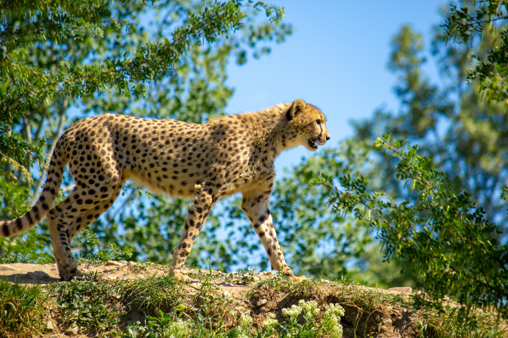

Step into the African Savannah
Experience the magic of Africa's diverse and captivating landscapes, right here in South Canterbury! Our African area is home to some of the continent's most iconic animals, including the majestic lion, the swift cheetah, and the towering giraffe.
Stroll through our park and observe these magnificent creatures up close, while learning about their natural habitats, behaviors, and the conservation efforts in place to protect their future. Don't miss our daily animal encounters, feeding sessions, and interactive talks led by our passionate team of animal experts. Unleash your inner explorer and experience the African Savannah today!
Introducing our pride of lions, led by our regal male, Leo, and his beautiful lioness companions, Nala and Zara. These magnificent big cats are known for their prowess, strength, and social nature. In our park, you'll have the chance to observe the complex dynamics of the lion pride as they interact, play, and rest together. Learn about their hunting techniques, their roles within the pride, and the conservation efforts in place to protect these incredible animals in the wild.

Lion, Raiona - Leonard von Bibra

Lion, Raiona - Bisakha Datta

Lion, Raiona - Jeremy Avery
Meet our swift and graceful cheetah duo, Dash and Blaze. These elegant felines hold the title of the fastest land animals on Earth, capable of reaching speeds up to 60 miles per hour (97 km/h) in a matter of seconds. Watch them in action as they display their extraordinary agility and acceleration during our daily cheetah runs. Get to know more about their unique hunting strategies, their vulnerable status in the wild, and the initiatives aimed at safeguarding their population.

Cheetah, _______ - Rodrigo Ardilha

Cheetah, _______ - Christin Noelle